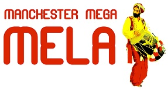
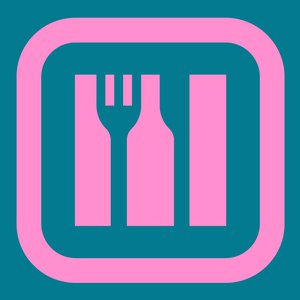
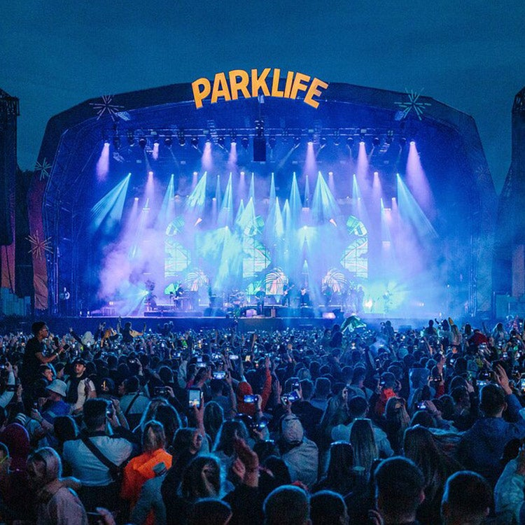
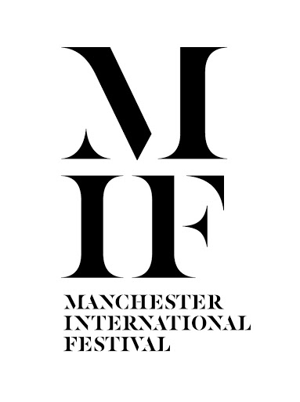
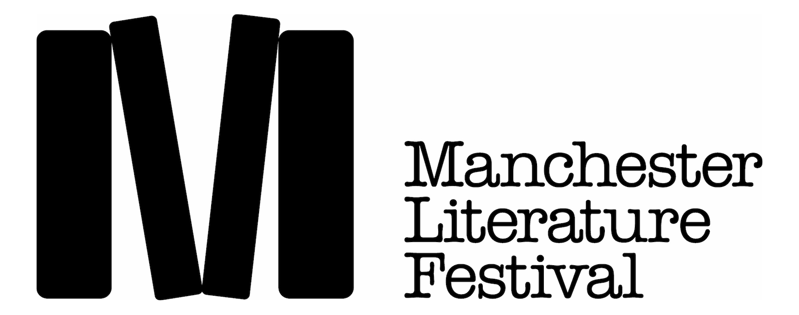

Cultural Events
Manchester Mega Mela

Manchester Mega Mela, hosted during July annually, is the largest celebration of South Asian Culture in the North of England. Music, dance, food
and traditional arts and crafts bring the sights, sounds and spicy aromas of South Asia to Platt Fields Park each year.
The Mela is a two day fun-filled event which takes place in the summer.
The Mela is renowned for always hosting a wide variety of great attractions.
Some of the biggest names in the UK and
International Asian entertainment scene perform on two stages on both the days. Other attractions include a huge
selection of food stalls, free henna painting, rangoli, face painting, dance workshops, fashion show, a funfair and Kabbadi.
Click here to find out more.
Manchester Food and Drink Festival

The Manchester Food and Drink Festival is now a well established, nationally acclaimed event,
and 2021 will see its 24th annual festival take-over of the City.
Festival events take place in venues across the City and at the Festival Hub, where a bespoke food
and drink centre is custom built. Over the years, names as diverse as Jamie Oliver, Gordon Ramsay,
Tom Kerridge, Fergus Henderson, Michel Roux, John Torode and even Bill Wyman have all been involved.
The MFDF awards are widely regarded as the most important in the region, with this year’s awards being presented on 27th September.
Click here to find out more.
Art and Literature Events
Parklife Festival 2021

Parklife is the largest metropolitan music festival in the UK and takes place at Heaton Park in Manchester.
The Manchester festival blends beats from multiple music genres, including hip hop, grime, pop, rock, club, house and dance DJs.
The non-camping northern festival has developed a reputation for its wonderfully diverse and eclectic line-up, attracting some
of the world's biggest artists to its multiple stages. The event also has chill zones, street food and bars, entertainers and art installations to enjoy.
This year's festival takes place from the 10th and 12th of September.
Click here to find out more
Manchester International Festival

The Manchester International Festival is a biennial international arts festival, with a specific focus on original new work,
held in Manchester.
This year's event will take place from the 1st to the 18th of July.
Click here for more details.
Manchester Literature Festival

The Manchester Literature Festival provides the best in contemporary writing from across the world.
The festival presents over 70 high quality live literature events, taking in both fiction and non-fiction.
Click here to find out more.